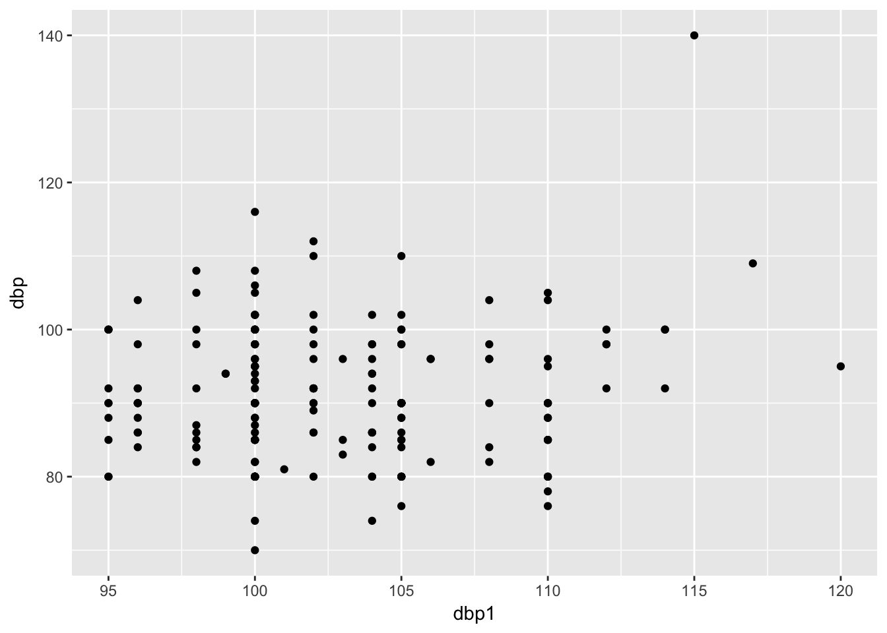
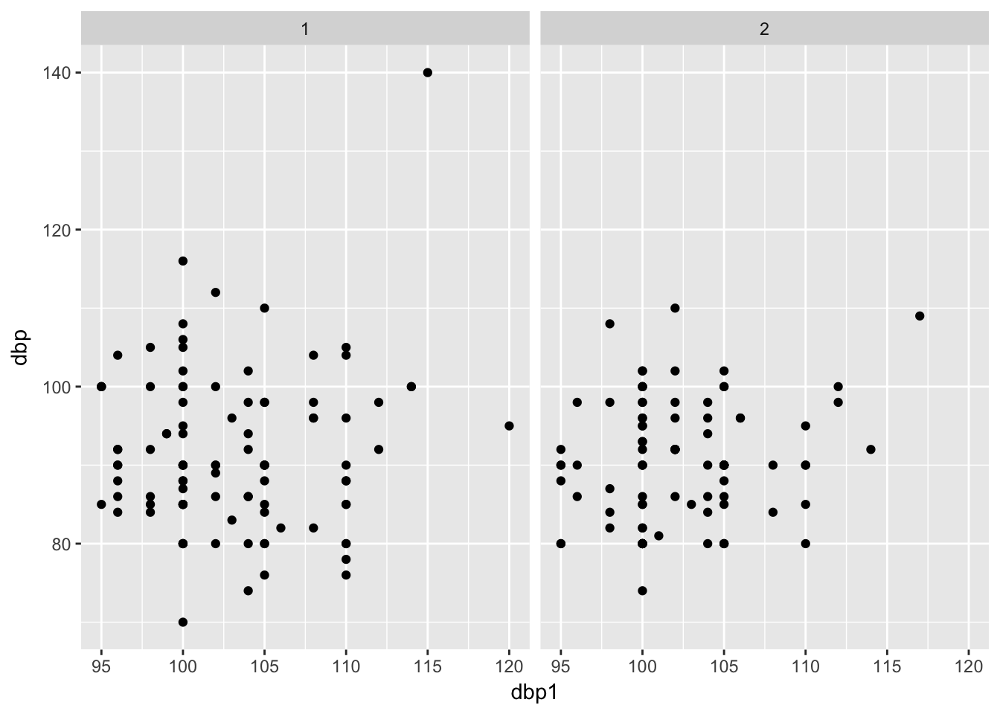
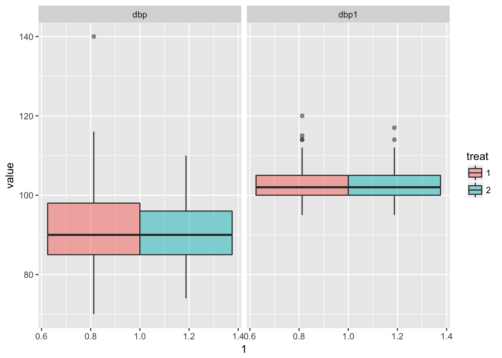
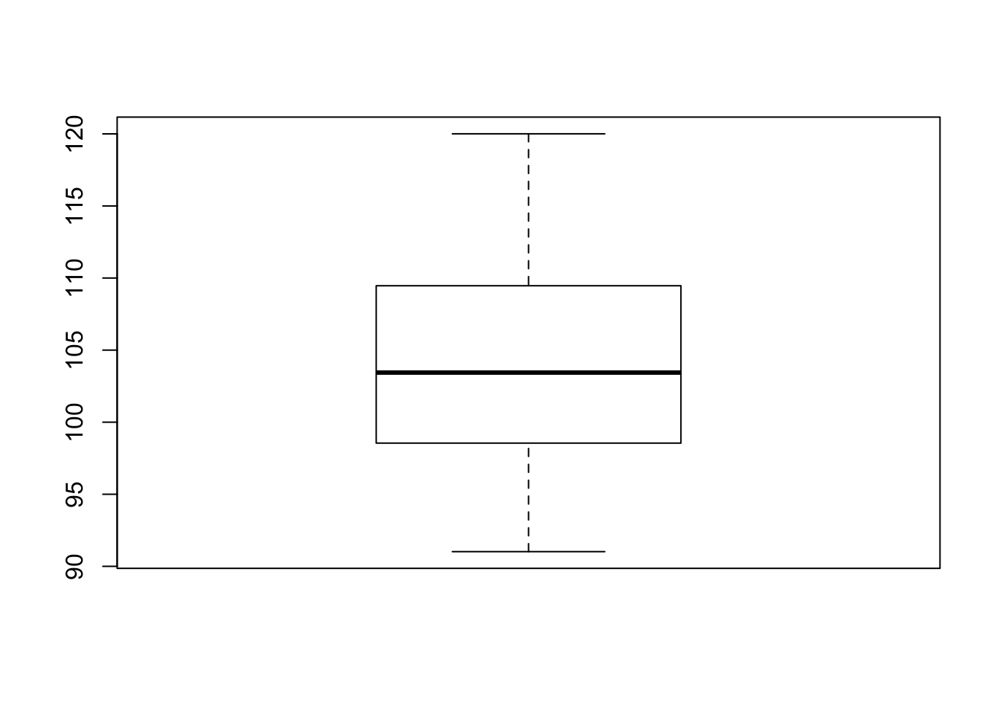
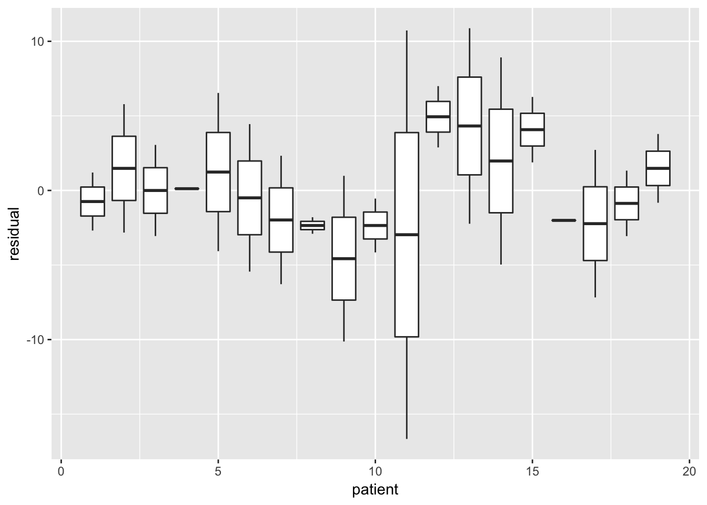

Mixed models quizzes
Wouter van Amsterdam
2018-04-16
Last updated: 2018-04-19
Code version: 4a05fe1
Setup R environment
library(dplyr)
library(data.table)
library(magrittr)
library(purrr)
library(here) # for tracking working directory
library(ggplot2)
library(epistats)
library(broom)
library(lme4)Day 1
Part c of this question will be used in the quiz this afternoon. Please save or print the output and have it on hand (together with this exercise) when you complete the quiz.
A multi-center, randomized, double-blind clinical trial was done to compare two treatments for hypertension. One treatment was a new drug (1 = Carvedilol) and the other was a standard drug for controlling hypertension (2 = Nifedipine). Twenty-nine centers participated in the trial and patients were randomized in order of entry. One pre-randomization and four post-treatment visits were made. Here, we will concentrate on the last recorded measurement of diastolic blood pressure (primary endpoint: dbp). The data can be found in the SPSS data file dbplast.sav. Read the data into R or SPSS. The research question is which of the two medicines (treat) is more effective in reducing DBP. Since baseline (pre-randomization) DBP (dbp) will likely be associated with post-treatment DBP and will reduce the variation in the outcome (thereby increasing our power to detect a treatment effect), we wish to include it here as a covariate.
Read in the data
bp <- haven::read_spss(here("data", "dbplast.sav"))
str(bp)Classes 'tbl_df', 'tbl' and 'data.frame': 193 obs. of 5 variables:
$ patient: atomic 3 4 5 7 8 9 10 13 14 18 ...
..- attr(*, "format.spss")= chr "F7.0"
$ center : atomic 5 5 29 3 3 3 3 36 36 36 ...
..- attr(*, "format.spss")= chr "F8.0"
$ dbp : atomic 109 87 85 100 80 90 100 80 85 100 ...
..- attr(*, "format.spss")= chr "F10.0"
..- attr(*, "display_width")= int 10
$ dbp1 : atomic 117 100 105 114 105 100 102 100 100 100 ...
..- attr(*, "format.spss")= chr "F8.0"
$ treat : atomic 2 1 1 1 2 2 1 2 1 1 ...
..- attr(*, "format.spss")= chr "F8.0"
..- attr(*, "display_width")= int 10Curate
factor_vars <- c("center", "patient", "treat")
bp %<>% mutate_at(vars(factor_vars), funs(as.factor))a.
Make some plots to describe the patterns of the data.
summary(bp) patient center dbp dbp1 treat
3 : 1 1 :27 Min. : 70.00 Min. : 95.0 1:100
4 : 1 31 :24 1st Qu.: 85.00 1st Qu.:100.0 2: 93
5 : 1 14 :16 Median : 90.00 Median :102.0
7 : 1 36 :15 Mean : 91.05 Mean :102.7
8 : 1 7 :12 3rd Qu.: 98.00 3rd Qu.:105.0
9 : 1 5 : 9 Max. :140.00 Max. :120.0
(Other):187 (Other):90 First scatter plot an pre-and post bp;
Let’s assume that dbp1 = pre
bp %>%
ggplot(aes(x = dbp1, y = dbp)) +
geom_point()
Now per treatment
bp %>%
ggplot(aes(x = dbp1, y = dbp)) +
geom_point() +
facet_wrap(~treat)
Look at marginal distributions per treatment
bp %>%
as.data.table() %>%
data.table::melt(id.vars = c("patient", "treat"), measure.vars = c("dbp", "dbp1")) %>%
ggplot(aes(x = 1, y = value, fill = treat)) +
geom_boxplot(alpha = .5) +
facet_wrap(~variable)
b.
Fit a model to answer the research question, using maximum likelihood estimation, taking into account that patients within centers may have correlated data. Interpret the coefficients of the model.
lmer(dbp ~ dbp1 + treat + (1 | center), data = bp, REML = F) %>%
summary()Linear mixed model fit by maximum likelihood ['lmerMod']
Formula: dbp ~ dbp1 + treat + (1 | center)
Data: bp
AIC BIC logLik deviance df.resid
1393.7 1410.1 -691.9 1383.7 188
Scaled residuals:
Min 1Q Median 3Q Max
-2.1666 -0.7244 -0.0745 0.5536 5.0417
Random effects:
Groups Name Variance Std.Dev.
center (Intercept) 7.98 2.825
Residual 70.67 8.406
Number of obs: 193, groups: center, 27
Fixed effects:
Estimate Std. Error t value
(Intercept) 74.1014 13.5245 5.479
dbp1 0.1747 0.1306 1.338
treat2 -1.1179 1.2205 -0.916
Correlation of Fixed Effects:
(Intr) dbp1
dbp1 -0.997
treat2 -0.122 0.080c.
Make a new baseline dbp variable, centered around its mean. Re-fit the model in (b) using the centered baseline blood pressure variable, using maximum likelihood estimation, and interpret the parameters of this new model.
fit <- bp %>%
mutate(dbp_center = dbp1 - mean(dbp1)) %>%
lmer(dbp ~ dbp_center + treat + (1 | center), data = ., REML = F)
fit %>%
summary()Linear mixed model fit by maximum likelihood ['lmerMod']
Formula: dbp ~ dbp_center + treat + (1 | center)
Data: .
AIC BIC logLik deviance df.resid
1393.7 1410.1 -691.9 1383.7 188
Scaled residuals:
Min 1Q Median 3Q Max
-2.1666 -0.7244 -0.0745 0.5536 5.0417
Random effects:
Groups Name Variance Std.Dev.
center (Intercept) 7.98 2.825
Residual 70.67 8.406
Number of obs: 193, groups: center, 27
Fixed effects:
Estimate Std. Error t value
(Intercept) 92.0438 1.0566 87.11
dbp_center 0.1747 0.1306 1.34
treat2 -1.1179 1.2205 -0.92
Correlation of Fixed Effects:
(Intr) dbp_cn
dbp_center -0.068
treat2 -0.548 0.080Day 3
5.
Part b of this question will be used in the quiz this afternoon. Please save the output and have it on hand (together with this exercise) when you complete the quiz.
Take another look at the crossover study (crossover.sav and crossover.dat) from Day 1.
Read in data and curate
bpco <- read.table(here("data", "crossover.dat"), header = T)
bpco %<>%
set_colnames(tolower(colnames(bpco)))
factor_vars <- c("period", "drug")
bpco %<>% mutate_at(vars(factor_vars), funs(as.factor))
str(bpco)'data.frame': 36 obs. of 4 variables:
$ patient: int 1 1 2 2 3 3 4 5 5 6 ...
$ period : Factor w/ 2 levels "1","2": 1 2 1 2 1 2 2 1 2 1 ...
$ drug : Factor w/ 2 levels "1","2": 1 2 2 1 1 2 1 2 1 1 ...
$ y : int 100 112 116 114 108 110 104 114 114 98 ...a.
Check the assumptions for the model from exercise 5b on Day 1.
- was:
Fit a model to the data, looking at drug and period effect and correcting for the fact that (most) patients have more than one DBP measurement. Which variable(s) do you choose as random?
fit <- lmer(y ~ drug + period + (1 | patient), data = bpco, REML = F)
fit %>% summary()Linear mixed model fit by maximum likelihood ['lmerMod']
Formula: y ~ drug + period + (1 | patient)
Data: bpco
AIC BIC logLik deviance df.resid
280.7 288.6 -135.3 270.7 31
Scaled residuals:
Min 1Q Median 3Q Max
-2.28988 -0.42035 -0.02943 0.44467 1.49483
Random effects:
Groups Name Variance Std.Dev.
patient (Intercept) 80.65 8.981
Residual 52.95 7.277
Number of obs: 36, groups: patient, 19
Fixed effects:
Estimate Std. Error t value
(Intercept) 104.955 2.983 35.18
drug2 9.360 2.471 3.79
period2 -1.250 2.474 -0.51
Correlation of Fixed Effects:
(Intr) drug2
drug2 -0.388
period2 -0.427 -0.058Normal distribution of residuals:
qqnorm(resid(fit))
Pretty o.k.
Check outliers of random terms
intercepts <- coef(fit)$patient[,1]
boxplot(intercepts)
Seems ok
Check distribution of residuals within patients
bpco %>%
mutate(residual = resid(fit)) %>%
ggplot(aes(y = residual, x = patient, group = patient)) +
geom_boxplot()
Patient 11 seems to have quite extreme residuals
There is no linear effect of time assumed in the model, so it does not make sense to check for this assumption.
b.
Use this dataset to answer the questions: is there a significant difference between the two drugs, and is there a significant period effect? Begin with the full model from part (a), and reduce the model (if possible) by removing the least significant explanatory variable(s). Use the likelihood ratio test (and maximum likelihood estimation) to test.
Quiz assignment so not included
drop1(fit, test = "Chisq")Single term deletions
Model:
y ~ drug + period + (1 | patient)
Df AIC LRT Pr(Chi)
<none> 280.68
drug 1 289.18 10.505 0.00119 **
period 1 278.93 0.254 0.61429
---
Signif. codes: 0 '***' 0.001 '**' 0.01 '*' 0.05 '.' 0.1 ' ' 1Period can be left out
fit <- update(fit, y ~ drug + (1 | patient))
drop1(fit, test = "Chisq")Single term deletions
Model:
y ~ drug + (1 | patient)
Df AIC LRT Pr(Chi)
<none> 278.93
drug 1 287.24 10.307 0.001325 **
---
Signif. codes: 0 '***' 0.001 '**' 0.01 '*' 0.05 '.' 0.1 ' ' 1We cannot remove ‘drug’ from the model without hurting model fit, it needs to stay in.
There is a significant effect of the drug on the outcome, according to the LRT
Session information
sessionInfo()R version 3.4.3 (2017-11-30)
Platform: x86_64-apple-darwin15.6.0 (64-bit)
Running under: macOS Sierra 10.12.6
Matrix products: default
BLAS: /Library/Frameworks/R.framework/Versions/3.4/Resources/lib/libRblas.0.dylib
LAPACK: /Library/Frameworks/R.framework/Versions/3.4/Resources/lib/libRlapack.dylib
locale:
[1] en_US.UTF-8/en_US.UTF-8/en_US.UTF-8/C/en_US.UTF-8/en_US.UTF-8
attached base packages:
[1] stats graphics grDevices utils datasets methods base
other attached packages:
[1] bindrcpp_0.2 lme4_1.1-15 Matrix_1.2-12
[4] broom_0.4.3 epistats_0.1.0 ggplot2_2.2.1
[7] here_0.1 purrr_0.2.4 magrittr_1.5
[10] data.table_1.10.4-3 dplyr_0.7.4
loaded via a namespace (and not attached):
[1] Rcpp_0.12.15 nloptr_1.0.4 pillar_1.1.0 compiler_3.4.3
[5] git2r_0.21.0 plyr_1.8.4 bindr_0.1 forcats_0.2.0
[9] tools_3.4.3 digest_0.6.15 evaluate_0.10.1 tibble_1.4.2
[13] gtable_0.2.0 nlme_3.1-131 lattice_0.20-35 pkgconfig_2.0.1
[17] rlang_0.1.6 psych_1.7.8 parallel_3.4.3 yaml_2.1.16
[21] haven_1.1.1 stringr_1.2.0 knitr_1.19 hms_0.4.1
[25] rprojroot_1.3-2 grid_3.4.3 glue_1.2.0 R6_2.2.2
[29] foreign_0.8-69 rmarkdown_1.8 minqa_1.2.4 readr_1.1.1
[33] reshape2_1.4.3 tidyr_0.8.0 MASS_7.3-48 splines_3.4.3
[37] backports_1.1.2 scales_0.5.0 htmltools_0.3.6 mnormt_1.5-5
[41] assertthat_0.2.0 colorspace_1.3-2 labeling_0.3 stringi_1.1.6
[45] lazyeval_0.2.1 munsell_0.4.3 This R Markdown site was created with workflowr